搜索配方、帖子、用户
＋
- 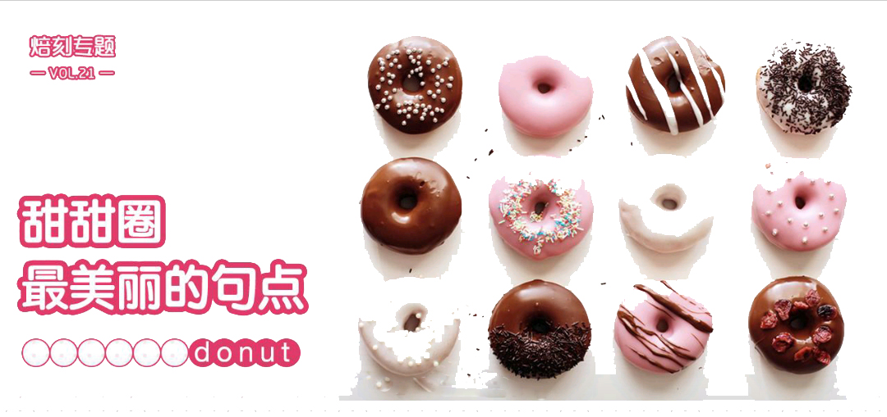
- 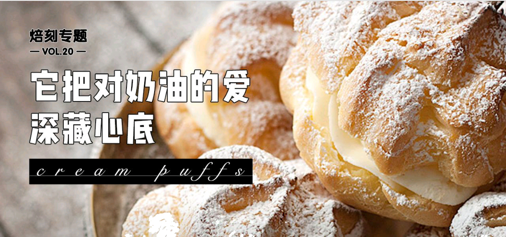
- 智选配方
- 我想做
- 我做过
- 最近看过
热门分类
- 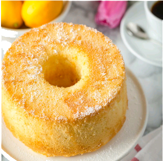
- 蛋糕
- 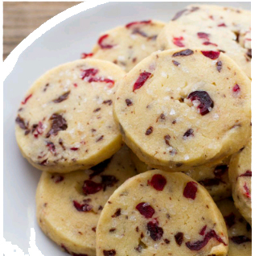
- 饼干
- 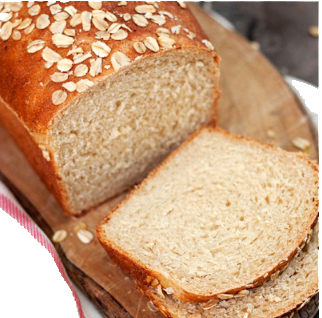
- 面包
- 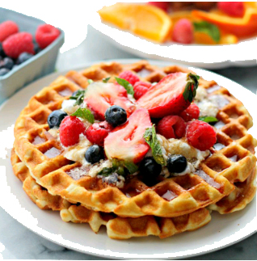
- 早餐
- 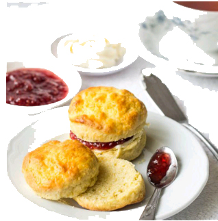
- 下午茶
- 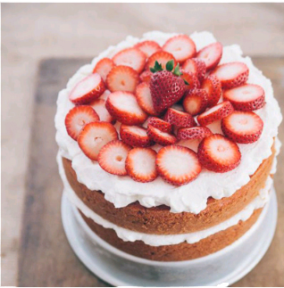
- 高颜值
- 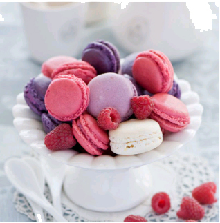
- 甜点
- 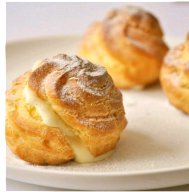
- 酥挞
- 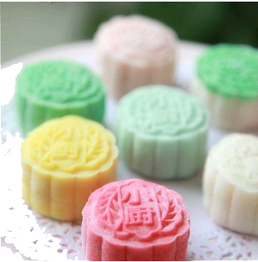
- 中式点心
- 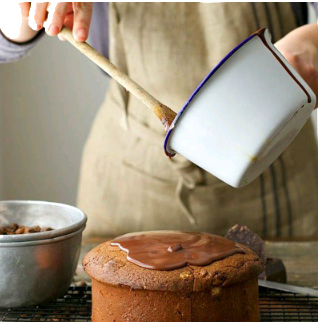
- 烘焙视频
- 饮品
- 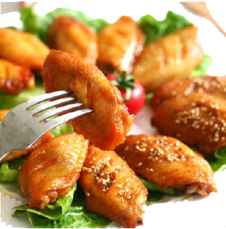
- 烤箱菜
- 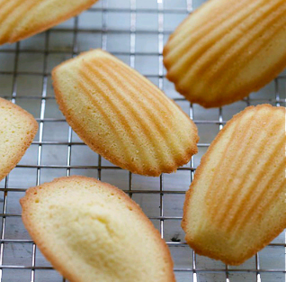
- 新手入门
- 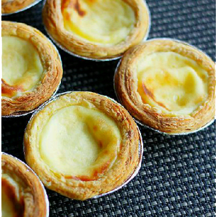
- 超简单
- 婴幼儿
常用原料
- 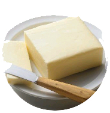
- 黄油
- 淡奶油
- 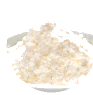
- 高筋面粉
- 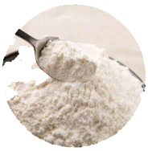
- 低筋面粉
管理我的原料
常用用具
- 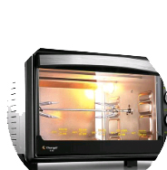
- 烤箱
- 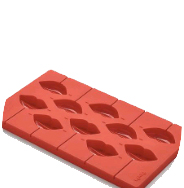
- 硅胶模具
- 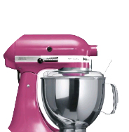
- 厨师机
- 面包机
查看全部用具
焙刻专题
查看全部专题
v3.2.6